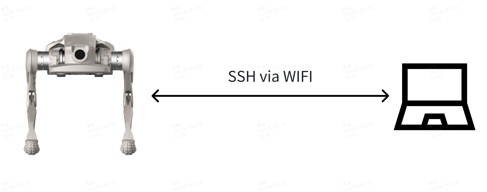

如何部署SDK
当前文档适用于
zsi-l设备SDK版本v0.2.6以上，运控版本v0.2.6以上（机器人本体0.2.0以上）
zsi-w设备SDK版本v0.2.7以上，运控版本v0.3.1以上（机器人本体0.3.3以上）
环境依赖
- Ubuntu 22.04
- CMake 3.8+
- GCC 11+
- Eigen3
- boost 1.74
- python3
1. 网络通讯
设备上配备无线网络与有线网络接口，其中无线网络信息位于设备右侧标签，标签内标注有设备SSID与密码信息。

机器人默认ip:
| 网络接口 |
IP地址 |
DHCP |
| 无线网络 |
192.168.234.1 |
有 |
| 有线网络 |
192.168.168.168 |
无 |
无线网络配备DHCP服务，连接上无线网络后，确保操作设备无线网络未配置固定IP，可以直接通过192.168.234.1与机器人建立通讯。
有线网络不配备DHCP服务，通过有线连接后，需要再操作设备有线网络配置固定IP，且IP为168网段，即可与机器人建立通讯。
机器人ip如有变更，需配置SDK_CLIENT_IP
2. 修改设备内与SDK通讯相关参数
2.1 登录设备
设备提供ssh登录，通过WiFi或无线与设备创建连接后，可通过命令：
| ssh firefly@{IP} #密码：firefly
|
{IP}，密码与用户名同样为firefly。
2.2 修改SDK配置文件
通过vim命令修改/opt/export/config/sdk_config.yaml文件：
| target_ip: "127.0.0.1"
target_port: 43988
|
target_ip修改为控制端设备连接机器人之后的IP地址，target_port如无必要可不修改。
默认设备仅支持WiFi网络，即target_ip为192.168.234.X的IP地址，如需要通过网线或其他网段IP通讯，需配合步骤2.4配置SDK_CLIENT_IP
2.3 配置SDK_CLIENT_IP
如需要使用网线或其他非192.168.234.X网段IP控制设备，需要通过vim命令修改
小狗点足(zsl-1)修改/opt/app_launch/start_motion_control.sh文件：
小狗轮足(zsl-1w)修改/opt/app_launch/start_motion_control_xgw.sh文件：
1
2
3
4
5
6
7
8
9
10
11
12
13
14
15
16
17
18
19
20
21
22
23
24
25
26
27
28
29 | #!/bin/bash
echo "start motion control"
# 共享内存文件路径
SHM_FILE="/dev/shm/spline_shm"
# 循环检查设备是否存在
while true; do
if [ -e "$SHM_FILE" ]; then
echo "共享内存文件 $SHM_FILE 已存在。"
break
else
echo "共享内存文件 $SHM_FILE 不存在，等待 1 秒后重试..."
sleep 1
fi
done
# 共享内存文件存在后执行的命令
echo "共享内存文件已准备好，可以执行后续操作。"
sudo ifconfig lo multicast
sudo route add -net 224.0.0.0 netmask 240.0.0.0 dev lo
export LD_LIBRARY_PATH=/opt/export/mc/bin
export ROBOT_TYPE=P2
export SDK_CLIENT_IP="机器人新ip"
cd /opt/export/mc/bin && taskset -c 7 ./mc_ctrl r
|
在上面代码27行，增加对应配置:export SDK_CLIENT_IP="机器人新ip"，并将机器人的IP地址填写在对应参数内，如使用有线网络，则将机器人新IP修改为192.168.168.168,如果是其他IP则修改到对应IP即可。
此参数配置后有概率导致机器人无法使用遥控器！
配置SDK_CLIENT_IP后，若设备开机后网络未初始化完成，对应网卡未分配IP地址，导致运控程序绑定IP地址失败，会造成机器人无法使用遥控器。解决方案
3. 修改SDKDemo配置
3.1. 配置C++ IP 和端口
在代码中修改 CLIENT_IP 和 CLIENT_PORT：
| constexpr int CLIENT_PORT = 43988; // 本地端口
std::string CLIENT_IP = "192.168.234.15"; // 本地 IP 地址
// 机器人ip默认192.168.234.1，如果需要更改机器人IP可通过init_robot()接口传入更改后的机器人ip
|
3.2. 配置Python IP 和端口
| app.initRobot("192.168.234.15",43988, "192.168.234.1") # (本地IP, 本地端口, 机器人IP)
|
配置参数中机器人IP和本地端口需与sdk_config中target_ip和target_port参数保持一致。
请确保机器人 IP 和端口号匹配，否则无法建立通信！
如果删除或注释掉sdk_config.yaml中ip会导致机器的运控服务无法自起！
当设备程序进行更新，或运控程序进行更新后，配置文件会被重置，相关配置需要重新配置！
4. 示例运行步骤
4.1 编译demo
ZSL-1
| cd demo/zsl-1/cpp
mkdir build
cd build
cmake ..
make -j6
|
ZSL-1w
| cd demo/zsl-1w/cpp
mkdir build
cd build
cmake ..
make -j6
|
4.2 运行c++demo
ZSL-1
| cd demo/zsl-1/cpp/build
./highlevel_demo
or
./lowlevel_demo
|
ZSL-1w
| cd demo/zsl-1w/cpp/build
./highlevel_demo
|
ZSL-1w 不提供 LowLevel 接口，因此仅有 highlevel_demo。
4.3 运行python demo
ZSL-1
| cd demo/zsl-1/python/examples
python highlevel_demo.py
or
python lowlevel_demo.py
|
ZSL-1w
| cd demo/zsl-1w/python/examples
python highlevel_demo.py
|
4.4 基于cmake使用mc_sdk
ZSL-1
1
2
3
4
5
6
7
8
9
10
11
12
13
14
15
16
17
18
19
20
21
22
23
24
25
26
27
28
29
30
31
32
33
34
35
36
37
38
39
40
41
42
43
44
45
46
47
48
49
50
51
52
53
54
55
56 | cmake_minimum_required(VERSION 3.16)
project(test)
set(CMAKE_CXX_STANDARD_REQUIRED ON)
set(CMAKE_CXX_STANDARD 17)
# 定义架构变量（默认未知）
set(ARCH "unknown")
# 识别 x86_64 架构（兼容不同系统的返回值）
if(CMAKE_HOST_SYSTEM_PROCESSOR MATCHES "x86_64|amd64")
set(ARCH "x86_64")
# 识别 arm64/aarch64 架构
elseif(CMAKE_HOST_SYSTEM_PROCESSOR MATCHES "aarch64|arm64")
set(ARCH "aarch64")
else()
message(FATAL_ERROR "不支持的架构: ${CMAKE_HOST_SYSTEM_PROCESSOR}，请检查 lib 目录下是否有对应架构的库")
endif()
message(STATUS "检测到系统架构: ${ARCH}")
# 库文件路径：上层目录 -> lib/zsl-1/架构目录
set(LIB_PATH "${CMAKE_SOURCE_DIR}/../../../lib/zsl-1/${ARCH}")
message(STATUS "将链接的库路径: ${LIB_PATH}")
# 查找对应架构的库（库文件名为 libmc_sdk_zsl_1_${ARCH}.so）
find_library(MC_SDK_LIB
NAMES "mc_sdk_zsl_1_${ARCH}" # 库名（不含前缀lib和后缀.so）
PATHS ${LIB_PATH}
NO_DEFAULT_PATH # 只在指定路径查找，避免找到其他版本
REQUIRED
)
# 验证库是否找到
if(NOT MC_SDK_LIB)
message(FATAL_ERROR "在 ${LIB_PATH} 中未找到库文件 mc_sdk_zsl_1_${ARCH}.so，请检查库是否存在")
else()
message(STATUS "找到库文件: ${MC_SDK_LIB}")
endif()
# highlevel示例
add_executable(highlevel_demo highlevel_demo.cpp)
target_link_libraries(highlevel_demo ${MC_SDK_LIB})
target_include_directories(highlevel_demo PRIVATE
${CMAKE_SOURCE_DIR}/../../../include # 公共头文件
${CMAKE_SOURCE_DIR}/../../../include/zsl-1 # ZSL-1专属头文件
)
# lowlevel示例
add_executable(lowlevel_demo lowlevel_demo.cpp)
target_link_libraries(lowlevel_demo ${MC_SDK_LIB})
target_include_directories(lowlevel_demo PRIVATE
${CMAKE_SOURCE_DIR}/../../../include
${CMAKE_SOURCE_DIR}/../../../include/zsl-1
)
|
ZSL-1w（CMake 路径差异）
与 ZSL-1 配置一致，仅需将库与头文件路径中的 <model> 改为 zsl-1w：
1
2
3
4
5
6
7
8
9
10
11
12
13
14
15
16 | # 库文件路径：lib/zsl-1w/${ARCH}
set(LIB_PATH "${CMAKE_SOURCE_DIR}/../../../lib/zsl-1w/${ARCH}")
# 查找库：mc_sdk_zsl_1w_${ARCH}
find_library(MC_SDK_LIB
NAMES "mc_sdk_zsl_1w_${ARCH}"
PATHS ${LIB_PATH}
NO_DEFAULT_PATH
REQUIRED
)
# 头文件包含路径
target_include_directories(highlevel_demo PRIVATE
${CMAKE_SOURCE_DIR}/../../../include
${CMAKE_SOURCE_DIR}/../../../include/zsl-1w
)
|
4.5 基于python使用mc_sdk
ZSL-1
| import os
import platform
import sys
arch = platform.machine().replace('amd64', 'x86_64').replace('arm64', 'aarch64')
lib_path = os.path.abspath(f'{os.path.dirname(__file__)}/../../../../lib/zsl-1/{arch}')
sys.path.insert(0, lib_path)
import mc_sdk_zsl_1_py
|
ZSL-1w
| import os, platform, sys
arch = platform.machine().replace('amd64', 'x86_64').replace('arm64', 'aarch64')
lib_path = os.path.abspath(f'{os.path.dirname(__file__)}/../../../../lib/zsl-1w/{arch}')
sys.path.insert(0, lib_path)
import mc_sdk_zsl_1w_py
|